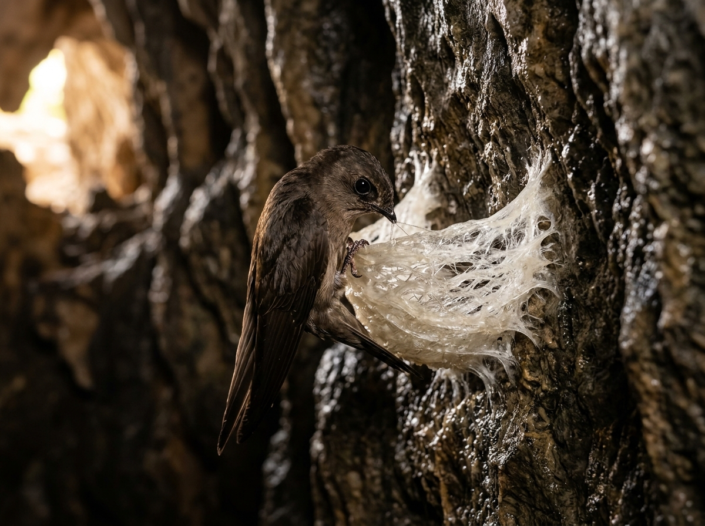

วิธีสังเกตรังนกแท้และรังนกปลอม
สารบัญบทความ7 หัวข้อ
รังนกเป็นสินค้าราคาสูงที่ขายกันตามน้ำหนัก จึงเป็นเป้าหมายของการปลอมแปลงและปลอมปนมาโดยตลอด ข่าวดีคือรังนกแท้มีลักษณะเฉพาะหลายอย่างที่สังเกตได้ด้วยตนเอง หากรู้ว่าควรดูอะไร บทความนี้รวบรวมวิธีสังเกตตั้งแต่ขั้นพื้นฐานไปจนถึงข้อจำกัดของการตรวจเองที่บ้าน
เข้าใจรังนกแท้ก่อนจับผิดของปลอม
รังนกแท้เกิดจากน้ำลายของนกแอ่นที่ถูกพ่นออกมาเป็นเส้นเล็ก ๆ แล้วนกค่อย ๆ ซ้อนเส้นเหล่านั้นเป็นชั้นจนกลายเป็นรังทรงถ้วย น้ำลายนี้แข็งตัวเมื่อสัมผัสอากาศ และมีองค์ประกอบหลักเป็นไกลโคโปรตีน คือโปรตีนที่จับกับสายน้ำตาล ซึ่งรวมถึงกรดเซียลิกที่มักใช้เป็นตัวบ่งชี้ในงานวิเคราะห์
ลักษณะการสร้างแบบนี้ทำให้รังนกแท้มีคุณสมบัติสำคัญสามประการที่ของปลอมเลียนแบบได้ยาก ประการแรกคือโครงสร้างเป็นเส้นซ้อนชั้นที่ไม่สม่ำเสมอ ประการที่สองคือความไม่สมบูรณ์แบบตามธรรมชาติ เช่น ความหนาไม่เท่ากัน สีต่างกันเล็กน้อยในแต่ละส่วน และประการที่สามคือพฤติกรรมเมื่อโดนน้ำ ที่เส้นจะพองตัวและแยกออกจากกันโดยไม่ละลาย หลักการทั้งหมดในบทความนี้ต่อยอดจากสามประการนี้

สังเกตด้วยตา
การมองอย่างละเอียดในที่ที่มีแสงสว่างเพียงพอเป็นขั้นตอนแรกที่ทำได้ทันทีโดยไม่ทำให้สินค้าเสียหาย ควรสังเกตทั้งด้านในและด้านนอกของรัง และหากเป็นไปได้ให้ส่องกับแสงไฟหรือใช้แว่นขยาย
- ลายเส้น — รังนกแท้จะเห็นเป็นเส้นเล็ก ๆ ซ้อนกันหลายชั้น ขนาดและทิศทางไม่เป็นระเบียบสมบูรณ์ หากผิวเรียบเนียนเป็นเนื้อเดียวหรือลายเส้นดูเป็นแบบแผนซ้ำ ๆ เหมือนกดพิมพ์ ควรสงสัย
- สี — สีธรรมชาติมักเป็นขาวนวลหรือขาวอมเหลือง และอาจไม่สม่ำเสมอทั้งรัง รังที่ขาวจัดเหมือนกระดาษ หรือสีเหลืองทองและสีแดงที่เข้มสม่ำเสมอผิดปกติ อาจผ่านการฟอกหรือย้อมสี
- ความโปร่งแสง — เมื่อส่องกับแสง รังนกแท้มักโปร่งแสงบางส่วนและเห็นโครงข่ายของเส้น ไม่ทึบตันทั้งรัง และไม่ใสวาวเหมือนพลาสติก
- ร่องรอยธรรมชาติ — รังนกที่ทำความสะอาดแล้วอาจยังมีขนเล็กมากหรือจุดเล็ก ๆ หลงเหลือบ้าง ซึ่งเป็นเรื่องปกติ รังที่สะอาดหมดจดไร้ตำหนิทุกรังในราคาที่ไม่สูงนัก ควรตั้งคำถาม
- ผิวมันวาว — รังที่มีความมันเงาผิดปกติ อาจเคลือบสารเพื่อเพิ่มน้ำหนักหรือให้ดูสวยขึ้น
นอกจากการดูทีละรังแล้ว ควรมองภาพรวมของทั้งกล่องหรือทั้งล็อตด้วย รังนกแท้จากแหล่งเดียวกันจะมีขนาด ความหนา และเฉดสีแตกต่างกันบ้างตามธรรมชาติ หากทุกรังมีรูปทรงเหมือนกันราวกับออกมาจากแม่พิมพ์เดียว ขนาดเท่ากันทุกประการ และสีเดียวกันทั้งหมด อาจเป็นสัญญาณของการขึ้นรูปใหม่จากรังนกแตกหรือการใช้วัสดุอื่นประกอบ อย่างไรก็ตาม รังนกบ้านเกรดคัดพิเศษก็อาจมีความสม่ำเสมอสูงได้จากการคัดขนาด จึงต้องพิจารณาร่วมกับลายเส้นและผลการแช่น้ำเสมอ
ดมกลิ่นและสัมผัส
กลิ่น ของรังนกแท้ค่อนข้างอ่อน หลายคนบรรยายว่ามีกลิ่นคาวจาง ๆ คล้ายไข่ขาวหรือกลิ่นเฉพาะตัวของรังนก ไม่หอมหวาน และไม่มีกลิ่นสารเคมี หากได้กลิ่นฉุนคล้ายน้ำยาฟอกขาว กลิ่นเปรี้ยว กลิ่นอับชื้น หรือกลิ่นน้ำหอม ควรระวัง กลิ่นอับอาจบ่งบอกว่ารังเก็บในที่ชื้นจนเริ่มมีเชื้อรา ส่วนกลิ่นสารเคมีอาจมาจากการฟอกสี
การสัมผัส รังนกแท้ที่แห้งดีจะค่อนข้างแข็งและเปราะ เมื่อหักจะแตกออกเป็นชิ้นตามแนวเส้น ไม่ยืดหยุ่นเหมือนยางและไม่โค้งงอได้ง่าย ผิวไม่ควรเหนียวติดมือ ไม่มีคราบแป้งหรือผงหลุดติดนิ้ว และไม่ลื่นมันเหมือนเคลือบน้ำมัน รังที่นุ่มหรือยืดหยุ่นในสภาพแห้งอาจมีความชื้นสูงเกินไป หรืออาจมีวัสดุอื่นผสม
ทดสอบด้วยการแช่น้ำ
การแช่น้ำเป็นวิธีตรวจเองที่บ้านที่ให้ข้อมูลมากที่สุด และเป็นขั้นตอนที่ต้องทำอยู่แล้วก่อนนำรังนกไปปรุง จึงไม่สิ้นเปลือง ควรใช้ชิ้นตัวอย่างเล็ก ๆ และทำตามขั้นตอนต่อไปนี้
- เลือกชิ้นตัวอย่างขนาดเล็ก ชั่งน้ำหนักหรือจดขนาดไว้ก่อนแช่
- แช่ในน้ำสะอาดอุณหภูมิห้องในภาชนะแก้วใส เพื่อให้สังเกตสีของน้ำได้ง่าย
- ทิ้งไว้ตามระยะเวลาที่เหมาะกับชนิดของรัง โดยรังนกเส้นใช้เวลาสั้นกว่ารังเต็มหรือตีนรัง
- สังเกตการพองตัว ความชัดของเส้น สีของน้ำ และกลิ่นระหว่างแช่
- ใช้นิ้วหรือตะเกียบเขี่ยเบา ๆ แล้วลองดึงเส้นดูว่ายังคงตัวอยู่หรือไม่
สิ่งที่คาดหวังจากรังนกแท้: รังจะดูดน้ำและพองตัวขึ้นหลายเท่าจากขนาดเดิม เนื้อนุ่มลงจนเห็นเป็นเส้นใยโปร่งแสงแยกตัวชัดเจน เส้นยังคงตัวอยู่ได้ ยืดได้เล็กน้อยเมื่อดึงและไม่เปื่อยยุ่ยกลายเป็นเมือก น้ำที่แช่ควรใสหรือขุ่นเพียงเล็กน้อยจากฝุ่นหรือเศษขนที่หลงเหลือ
สัญญาณที่ควรสงสัย: รังละลายหรือเปื่อยยุ่ยอย่างรวดเร็ว เนื้อกลายเป็นวุ้นใสเป็นก้อนโดยไม่เห็นเส้น พองตัวน้อยผิดปกติหรือแข็งเป็นยาง น้ำเปลี่ยนเป็นสีขาวขุ่นข้นหรือมีสีย้อมออกมา มีฟองหรือคราบมันลอยบนผิวน้ำ หรือมีกลิ่นผิดปกติเกิดขึ้นระหว่างแช่
อีกขั้นที่ช่วยยืนยันได้คือการตุ๋น เมื่อนำรังนกที่แช่แล้วไปตุ๋นด้วยไฟอ่อนตามปกติ รังนกแท้จะยังคงเป็นเส้นใสนุ่ม มีความหนึบหรือกรุบเล็กน้อยตามชนิดของรัง และน้ำตุ๋นไม่ข้นเหนียวผิดปกติ หากเนื้อรังละลายหายไปจนเหลือแต่น้ำ หรือน้ำตุ๋นกลายเป็นวุ้นเมื่อตั้งทิ้งไว้จนเย็น อาจมีวัสดุอย่างวุ้นหรือยางไม้ปะปนอยู่
การเผาและการใช้ความร้อน: ข้อควรระวัง
ในโลกออนไลน์มักมีคำแนะนำให้นำรังนกไปเผาไฟ โดยอ้างว่ารังนกแท้จะไม่ลุกเป็นเปลวไฟ มีควัน และส่งกลิ่นคล้ายโปรตีนไหม้หรือเส้นผมไหม้ ขณะที่ของปลอมบางชนิดจะติดไฟง่าย หลอมละลาย หรือมีกลิ่นพลาสติกหรือกลิ่นหวานไหม้ แม้จะเป็นข้อสังเกตที่พอใช้ประกอบได้ แต่วิธีนี้มีข้อจำกัดสำคัญ
- วัสดุปลอมปนบางชนิด เช่น หนังหมูหรือไข่ขาว เป็นโปรตีนเหมือนกัน จึงอาจให้กลิ่นไหม้คล้ายรังนกแท้
- หากผสมของปลอมเพียงบางส่วน ผลการเผาชิ้นเล็ก ๆ อาจไม่สะท้อนภาพรวมของทั้งล็อต
- การเผาทำลายสินค้าราคาสูง และมีความเสี่ยงต่อการเกิดอุบัติเหตุจากไฟ
- การตีความกลิ่นและลักษณะการไหม้ขึ้นกับประสบการณ์ของผู้ทดสอบเป็นอย่างมาก
อีกวิธีที่มักถูกกล่าวถึงคือการหยดสารละลายไอโอดีนบนรังนกที่แช่น้ำแล้ว หากมีแป้งผสมอยู่ บริเวณนั้นมักเปลี่ยนเป็นสีน้ำเงินเข้มหรือม่วงดำ วิธีนี้ช่วยคัดกรองการปลอมปนด้วยแป้งได้ระดับหนึ่ง แต่ไม่สามารถตรวจหาวัสดุปลอมชนิดอื่นได้ และควรทิ้งชิ้นที่ทดสอบไปโดยไม่นำมาบริโภค
ตารางเปรียบเทียบรังนกแท้และรังนกปลอม
| การสังเกต | รังนกแท้ | รังนกปลอมหรือปลอมปน |
|---|---|---|
| ลายเส้น | เส้นเล็กซ้อนชั้น ไม่เป็นระเบียบสมบูรณ์ | เรียบเป็นเนื้อเดียว หรือลายซ้ำเป็นแบบแผน |
| สี | ขาวนวลถึงขาวอมเหลือง ไม่สม่ำเสมอเล็กน้อย | ขาวจัดผิดธรรมชาติ หรือสีเข้มสม่ำเสมอเกินไป |
| ความโปร่งแสง | โปร่งแสงบางส่วน เห็นโครงข่ายเส้น | ทึบตันทั้งรัง หรือใสวาวคล้ายพลาสติก |
| กลิ่น | คาวอ่อน ๆ คล้ายไข่ขาว | กลิ่นสารเคมี กลิ่นฟอกขาว กลิ่นหวาน หรือไม่มีกลิ่นเลย |
| สัมผัสขณะแห้ง | แข็ง เปราะ หักตามแนวเส้น | ยืดหยุ่นคล้ายยาง เหนียว มีผงหรือคราบมัน |
| การพองตัวเมื่อแช่น้ำ | พองตัวหลายเท่า เส้นนุ่มและแยกชัด | พองน้อยผิดปกติ หรือพองเป็นวุ้นไม่เห็นเส้น |
| ความคงตัวของเส้น | เส้นคงตัว ดึงยืดได้เล็กน้อย | เปื่อยยุ่ย ละลาย หรือแข็งกระด้างเป็นยาง |
| น้ำที่แช่ | ใส หรือขุ่นเล็กน้อย | ขาวขุ่นข้น มีสีออกมา หรือมีคราบมัน |
ใช้เป็นแนวทางประกอบการพิจารณาเท่านั้น การยืนยันความแท้ที่แม่นยำต้องอาศัยการตรวจในห้องปฏิบัติการ

เมื่อไรควรพึ่งห้องปฏิบัติการ
การตรวจเองที่บ้านช่วยคัดกรองของปลอมที่หยาบได้ดี แต่การปลอมปนแบบแนบเนียน เช่น การผสมวัสดุอื่นในสัดส่วนเล็กน้อย การเคลือบสารเพิ่มน้ำหนัก หรือการฟอกสีเพียงเล็กน้อย มักตรวจด้วยประสาทสัมผัสไม่พบ ในกรณีต่อไปนี้ การส่งตัวอย่างตรวจในห้องปฏิบัติการที่เชื่อถือได้จึงคุ้มค่า
- ซื้อในปริมาณมาก เพื่อจำหน่ายต่อ หรือเพื่อใช้เป็นวัตถุดิบในการผลิต
- ผลการสังเกตด้วยวิธีต่าง ๆ ขัดแย้งกัน หรือยังไม่มั่นใจ
- สินค้าราคาสูงเป็นพิเศษ เช่น รังเต็มเกรดพรีเมียม หรือรังนกสีแดงและสีทอง
- ต้องการทราบข้อมูลความปลอดภัย เช่น ปริมาณไนไตรต์ จุลินทรีย์ หรือสารตกค้าง
- จะนำไปให้ผู้ที่มีความเสี่ยงด้านสุขภาพรับประทาน เช่น เด็กเล็ก ผู้สูงอายุ หรือผู้ที่มีประวัติแพ้อาหาร
ห้องปฏิบัติการสามารถวิเคราะห์องค์ประกอบได้หลายด้าน เช่น โปรตีนและกรดเซียลิก การตรวจหาดีเอ็นเอของสัตว์ชนิดอื่นที่อาจปลอมปน และเทคนิคทางสเปกโทรสโกปีที่ช่วยจำแนกวัสดุ รายละเอียดของแต่ละวิธีอธิบายไว้ในบทความเรื่องการตรวจสอบคุณภาพ สำหรับผู้บริโภคทั่วไป ทางเลือกที่ง่ายที่สุดคือเลือกซื้อจากผู้ผลิตที่ได้รับเลขสารบบอาหารจาก อย. และสามารถแสดงผลตรวจวิเคราะห์ของล็อตสินค้าได้
รังนกแท้ไม่จำเป็นต้องสวยไร้ที่ติ แต่ต้องมีเส้นที่ซ้อนชั้นอย่างเป็นธรรมชาติ และต้องผ่านการแช่น้ำได้โดยไม่สูญเสียความเป็นเส้น
— ทีมบรรณาธิการด้านคุณภาพ SWIFTLETHUB
แหล่งข้อมูลและการอ้างอิง
- สำนักงานคณะกรรมการอาหารและยา (ข้อมูลทั่วไปเกี่ยวกับการขออนุญาตและฉลากผลิตภัณฑ์อาหาร)
- งานวิจัยเกี่ยวกับวิธีตรวจสอบการปลอมปนในรังนกที่บริโภคได้ (ข้อมูลทั่วไป)
บทความนี้มีวัตถุประสงค์เพื่อให้ความรู้ทั่วไป ข้อมูลที่ระบุว่าเป็น “ข้อมูลตัวอย่าง” ใช้เพื่ออธิบายแนวคิดเท่านั้น ไม่ใช่สถิติจริง หากต้องการข้อมูลเพื่อการตัดสินใจทางธุรกิจหรือสุขภาพ ควรปรึกษาผู้เชี่ยวชาญหรือหน่วยงานที่เกี่ยวข้อง